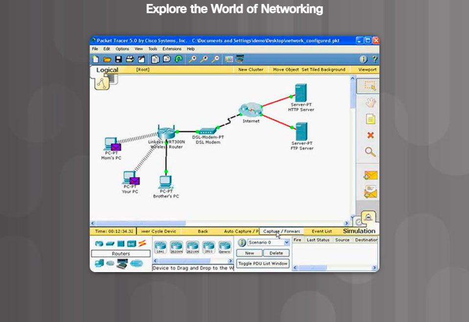

Packet Tracer is a networking learning tool that supports a wide range of physical and logical simulations. It also provides visualization tools to help you understand the internal workings of a network.
The pre-made Packet Tracer activities consist of network simulations, games, activities, and challenges that provide a broad range of learning experiences. These tools will help you develop an understanding of how data flows in a network.